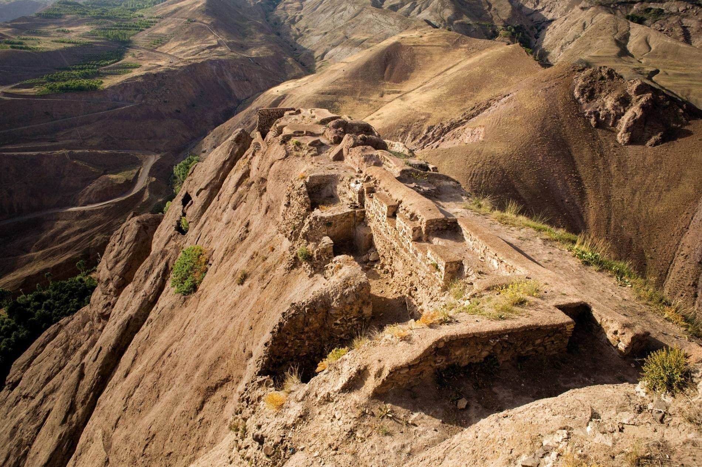

The HSKRC Digital Library
Open a book.
Discover a world.
Explore books, ideas and the intellectual heritage of Hassan Sabbah, Alamut and Ismaili history.
Your next discovery
New on the shelves
HSKRC / 01
خواجه نصیرالدین طوسی و اسماعیلیان
Persian · Catalogue recordExplore book
HSKRC / 02
اسماعیلیان در الموت و جنوب ناحیه دریای مازندران پس از فتوحات مغول
Persian · Catalogue recordExplore book
HSKRC / 03
شاهین سپید
Persian · Catalogue recordExplore book
HSKRC / 04
کتاب بههدایت المؤمنین الطالبین، معروف به تاریخ اسماعیلیه
Persian · Catalogue recordExplore book
HSKRC / 05
قلاع اسماعیلیه در رشتهکوههای البرز
Persian · Catalogue recordExplore book
HSKRC / 06
رودکی و اسماعیلیه
Persian · Catalogue recordExplore book
Follow your curiosity
Browse by subject
Find a starting point for your reading.

Alamut · A landscape of historyBeyond the bookshelf
Books are just the beginning.
Connect your reading with historical places, biographical profiles and source-linked research.
Explore the knowledge baseMeet the historical figuresRead articles & researchA library that grows with you
Help shape the collection.
Suggest a book, share a source or contribute to the research.